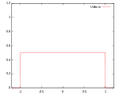
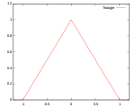
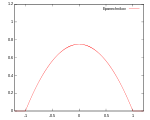
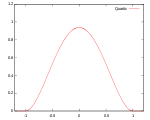
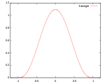
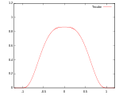
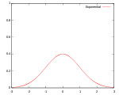
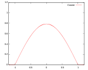
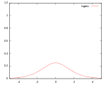
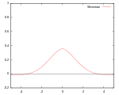

Kernel (statistics)
|
|
This article needs additional citations for verification. (May 2012) (Learn how and when to remove this template message) |
The term kernel has several distinct meanings in statistics.
Contents
[hide]In Bayesian statistics[edit]
In statistics, especially in Bayesian statistics, the kernel of a probability density function (pdf) or probability mass function (pmf) is the form of the pdf or pmf in which any factors that are not functions of any of the variables in the domain are omitted.[citation needed] Note that such factors may well be functions of the parameters of the pdf or pmf. These factors form part of the normalization factor of the probability distribution, and are unnecessary in many situations. For example, in pseudo-random number sampling, most sampling algorithms ignore the normalization factor. In addition, in Bayesian analysis of conjugate prior distributions, the normalization factors are generally ignored during the calculations, and only the kernel considered. At the end, the form of the kernel is examined, and if it matches a known distribution, the normalization factor can be reinstated. Otherwise, it may be unnecessary (for example, if the distribution only needs to be sampled from).
For many distributions, the kernel can be written in closed form, but not the normalization constant.
An example is the normal distribution. Its probability density function is
and the associated kernel is
Note that the factor in front of the exponential has been omitted, even though it contains the parameter , because it is not a function of the domain variable .
In pattern analysis[edit]
The kernel of a reproducing kernel Hilbert space is used in the suite of techniques known as kernel methods to perform tasks such as statistical classification, regression analysis, and cluster analysis on data in an implicit space. This usage is particularly common in machine learning.
In non-parametric statistics[edit]
In non-parametric statistics, a kernel is a weighting function used in non-parametric estimation techniques. Kernels are used in kernel density estimation to estimate random variables' density functions, or in kernel regression to estimate the conditional expectation of a random variable. Kernels are also used in time-series, in the use of the periodogram to estimate the spectral density where they are known as window functions. An additional use is in the estimation of a time-varying intensity for a point process where window functions (kernels) are convolved with time-series data.
Commonly, kernel widths must also be specified when running a non-parametric estimation.
Definition[edit]
A kernel is a non-negative real-valued integrable function K satisfying the following two requirements:
The first requirement ensures that the method of kernel density estimation results in a probability density function. The second requirement ensures that the average of the corresponding distribution is equal to that of the sample used.
If K is a kernel, then so is the function K* defined by K*(u) = λK(λu), where λ > 0. This can be used to select a scale that is appropriate for the data.
Kernel functions in common use[edit]
Several types of kernel functions are commonly used: uniform, triangle, Epanechnikov,[1] quartic (biweight), tricube,[2] triweight, Gaussian, quadratic[3] and cosine.
In the table below, 1{…} is the indicator function.
| Kernel Functions, K(u) | Efficiency* relative to the Epanechnikov kernel | ||||
|---|---|---|---|---|---|
| Uniform |  | 92.9% | |||
| Triangular |  | 98.6% | |||
| Epanechnikov |  | 100% | |||
| Quartic (biweight) |
 | 99.4% | |||
| Triweight |  | 98.7% | |||
| Tricube |  | 99.8% | |||
| Gaussian |  | 95.1 | |||
| Cosine |  | 99.9% | |||
| Logistic |  | 88.7% | |||
| Sigmoid function | 84.3% | ||||
| Silverman kernel[4] |  | not applicable | |||
{kind=link}
{kind=link}
{kind=link}
{kind=link}
{kind=link}
{kind=link}
{kind=link}
{kind=link}
{kind=link}
{kind=link}
- Efficiency is defined as .
Some of the kernels mentioned above in a common coordinate system[edit]

See also[edit]
- Kernel density estimation
- Kernel smoother
- Stochastic kernel
- Density estimation
- Multivariate kernel density estimation
|
|
This article includes a list of references, but its sources remain unclear because it has insufficient inline citations. (May 2012) (Learn how and when to remove this template message) |
References[edit]
- Jump up ^ Named for Epanechnikov, V. A. (1969). "Non-Parametric Estimation of a Multivariate Probability Density". Theory Probab. Appl. 14 (1): 153–158. doi:10.1137/1114019.
- Jump up ^ Altman, N. S. (1992). "An introduction to kernel and nearest neighbor nonparametric regression". The American Statistician. 46 (3): 175–185. doi:10.1080/00031305.1992.10475879.
- Jump up ^ Cleveland, W. S.; Devlin, S. J. (1988). "Locally weighted regression: An approach to regression analysis by local fitting". Journal of the American Statistical Association. 83: 596–610. doi:10.1080/01621459.1988.10478639.
- Jump up ^ Silverman, B. W. (1986). Density Estimation for Statistics and Data Analysis. Chapman and Hall, London.
- Li, Qi; Racine, Jeffrey S. (2007). Nonparametric Econometrics: Theory and Practice. Princeton University Press. ISBN 0-691-12161-3.
- Zucchini, Walter. "APPLIED SMOOTHING TECHNIQUES Part 1: Kernel Density Estimation" (PDF). Retrieved 12 August 2015.
- Comaniciu, D; Meer, P (2002). "Mean shift: A robust approach toward feature space analysis". IEEE Transactions on Pattern Analysis and Machine Intelligence. 24 (5): 603–619. doi:10.1109/34.1000236. CiteSeerX: 10
.1 ..1 .76 .8968